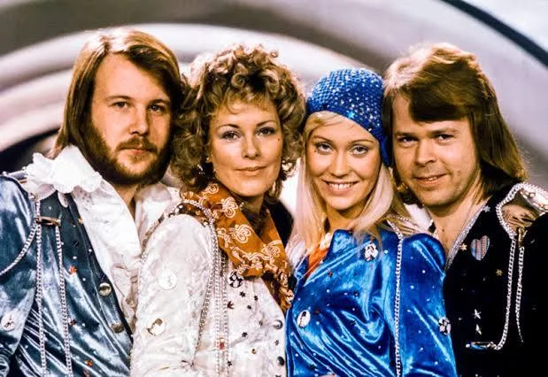

ABBA

Abba (av musikgruppen skrivet ABBA och som logotyp AᗺBA, med det första B:et spegelvänt) är en svensk popgrupp, som var aktiv under en tioårsperiod mellan 1972 och 1982 samt inför lansering av sitt sista studioalbum, utgivet 2021.[1] [2]
Gruppen består av de två före detta äkta paren Björn Ulvaeus och Agnetha Fältskog samt Benny Andersson och Anni-Frid "Frida" Lyngstad. Gruppnamnet bildades utifrån initialbokstäverna i medlemmarnas förnamn. Under hela gruppens karriär skrevs musik och text av Andersson och Ulvaeus, och fram till 1977 ibland tillsammans med gruppens manager, Stikkan Anderson.